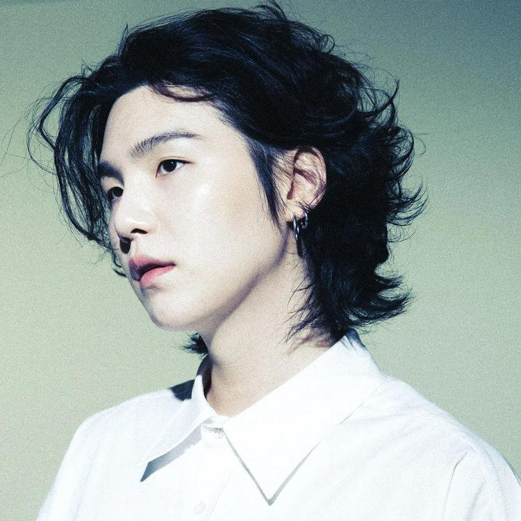
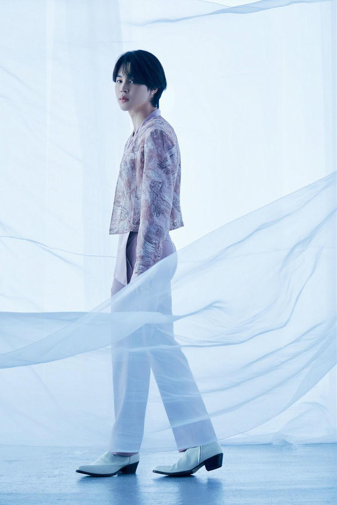
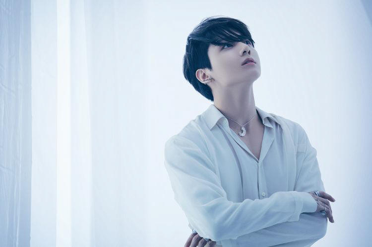

2013年6月13日出道的韓國7人男子組合。
bts在現存的韓國偶像中是世界級的超級明星。
整體上通過以10多歲和20多歲年輕人的想法和苦惱、生活和愛情、夢想和逆境爲主要主題的歌曲，
構築屬於自己的世界觀，通過多樣的MV，展現出有機地講述相關故事的樣子。
<Debut Song>
-----------------------------------------------------------------------------------------------
Member
-----------------------------------------------------------------------------------------------
本名: 金南俊 (김남준)
出生: 1994年9月12日(28歲)
國籍: 韓國
本名: 金碩珍 (김석진)
出生: 1992年12月4日（30歲）
國籍: 韓國
本名: 閔玧基 (민윤기)
出生: 1993年3月9日（29歲）
國籍: 韓國

本名:
鄭號錫 (정호석)
出生: 1994年2月18日(28歲)
國籍: 韓國
本名: 朴智旻 (박지민)
出生: 1995年10月13日（27歲）
國籍: 韓國

本名:
金泰亨 (김태형)
出生: 1995年12月30日（26歲）
國籍: 韓國
本名:
田柾國 (전정국)
出生: 1997年9月1日（25歲）
國籍: 韓國

HYBE | Kpop World